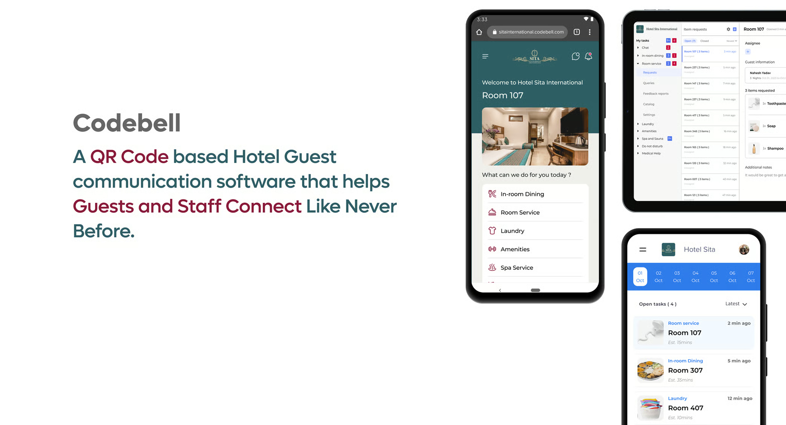

Designing a zero-to-one mobile ordering experience and operational dashboard for independent restaurants to reduce manual order errors and improve checkout clarity.

Codebell is a startup focused on helping small restaurants digitize their ordering systems without the complexity of enterprise platforms. Independent restaurants often rely on fragmented systems — phone orders, paper menus, third-party apps with high commission fees, or manual reconciliation.
The goal: Design a lightweight, intuitive ordering system that works for both customers and restaurant staff — without overwhelming either side.
Small restaurants face friction on both ends — customers struggle with confusing interfaces, while staff battle operational inefficiencies.
I conducted interviews and workflow discussions with restaurant owners, front-desk staff, and repeat customers to uncover real pain points.
Customers want fewer decisions per screen. Choice overload leads to abandonment.
Menu organization matters more than visual decoration. Clarity beats aesthetics.
Checkout confidence is tied to clarity of order summary. Transparent pricing reduces hesitation.
Restaurant staff prioritize speed over aesthetics. Efficiency is everything during rush hours.
Bulk actions are more important than detailed micro-editing. Time is the scarcest resource.
Instead of building a feature-heavy ordering app, I focused on three core pillars that align with startup constraints and real user needs.
Fewer visible options. Clear grouping. Predictable navigation. Every screen should have a single clear purpose.
Step-based flow that ensures required selections are completed before checkout. No missed options, no order errors.
Admin tools that reduce repetitive tasks and manual corrections. Built for speed under pressure.
The system had to feel lightweight, not enterprise-heavy. Simplicity was a feature, not a limitation.
The customer-facing app was designed around three key moments: browsing, customizing, and checking out.
Menus were structured into clean categories with strong visual separation. The focus was clarity over decoration.
Customization was redesigned as a guided step-based interaction. This eliminated missed selections and reduced checkout errors.
The checkout flow was designed to feel predictable and fast. The goal was to remove hesitation and confusion before payment.
The admin side was equally important. Instead of building a complex enterprise dashboard, I focused on what restaurants actually need under time pressure.
These decisions ensured the product aligned with startup constraints and real-world restaurant operations.
To reduce overwhelm and increase decision confidence. Every screen has a clear purpose.
To prevent missed required selections and reduce order errors at checkout.
Because restaurants operate under time pressure. Speed over micro-editing.
To prioritize usability over aesthetic noise. Clarity is the feature.
The platform connects customer orders to kitchen workflow through a reliable, transparent system.
If implemented across multiple restaurants, the system would deliver measurable improvements.
Clear pricing and order summary increase payment confidence
Structured customization prevents order errors upfront
Intuitive admin interface requires minimal onboarding
Bulk actions and clear status improve rush hour efficiency
This project strengthened my ability to design zero-to-one products under real startup constraints.
Building from scratch requires different thinking than redesigning existing products.
Customer simplicity and operational power must coexist in the same system.
Good product design extends beyond screens into how components connect.
Startup limitations forced focused, intentional design decisions.
"Good product design is not about adding features — it's about removing friction."